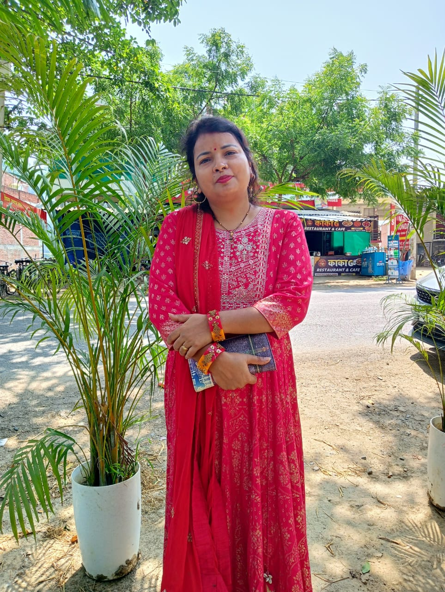

🎂 Birthday: 12 March 1992
👤 Name: Anuradha Maurya
♀ Gender: Female
🎓 Education: MSc in Botany
📞 Phone: 8858606901
🍲 Passionate cook and creator of a YouTube channel featuring delicious recipes and cooking ideas.
